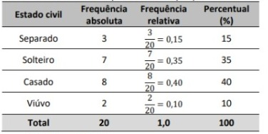
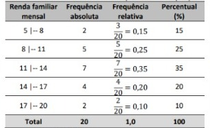

A leitura dos dados da tabela anterior não nos fornece as condições necessárias para a determinação do perfil do frequentador do parque, uma vez que as informações não estão devidamente organizadas.
O primeiro procedimento é a realização de uma tabela de frequência. Para cada classe estudada conta-se o número de vezes que ela ocorre.
O número obtido é a frequência absoluta. Dos 20 entrevistados, encontramos os seguintes resultados para o estado civil:
Em uma tabela é sempre importante haver um título, a fonte dos dados, e indicar a quantidade total dos entrevistados -no caso 20-, a fim de tornar a análise mais significativa.
A partir disso é possível estabelecer a frequência relativa e o percentual de cada categoria de variável.
Em certos casos, pode ocorrer que os valores assumidos pela variável pertençam a determinado intervalo real, não havendo praticamente repetições de valores, isso ocorre com valores de idade, tempo de permanência no parque e renda familiar mensal.
Nesse caso, construímos uma tabela em que os dados estão agrupados em classes/intervalos de valores:
Não existem regras fixas para se criar as classes, devemos usar do bom senso. Mas existem alguns passos que podem ajudar: